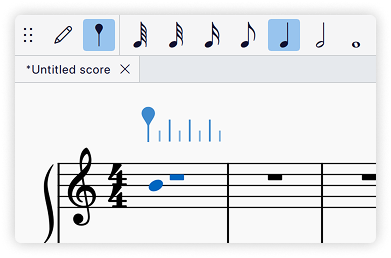

按时值输入模式
快速上手
使用 按时值输入 模式输入音符：
- 按 M 键进入按时值输入模式
- 按 A、B、C、D、E、F 或 G 键选择一个音高
- 在工具栏中按下一个时值，或键入时值快捷键（1–9）来输入音符
输入音符
MuseScore Studio 默认的音符输入方式是 按音名输入。如果你更愿意先选择音高，再通过按时值快捷键或工具栏按钮把音符输入到乐谱中，那么 按时值输入模式 正适合你。
选择起始位置
要向乐谱添加音符或休止符，首先要选择开始输入的位置。你可以使用鼠标或 键盘导航命令。
进入按时值输入模式
按 M 键进入按时值输入模式，或选择工具栏中的

选择音高
下一个将要输入音高的预览会以当前所选 声部 的颜色显示在乐谱上。在大多数乐器上，这个音高光标会落在谱表中间的线上。
可以使用电脑键盘、鼠标、MIDI 键盘或虚拟钢琴键盘输入音高。
使用电脑键盘选择音高
- 按 A、B、C、D、E、F 或 G 键按音名选择音高。
- 使用 ↑ 或 ↓ 键把音高光标向上或向下移动一条谱线或间。
- 使用 Ctrl + ↑ 或 Ctrl + ↓ 把音高光标向上或向下移动一个八度。
使用鼠标选择音高
将鼠标悬停在谱表上并单击，即可在光标位置输入一个音符。更多详情请参阅 输入音符与休止符 主页面。
选择时值
用上述任一方法选好音高后，在工具栏中按下一个时值，或使用快捷键（1–9）输入音符。时值快捷键列表如下：
输入和弦
就本节而言，和弦是指同时开始、共享同一时值并共享单根符干的任意多个音符的组合。
边输入音符边创建和弦
- 电脑键盘：按住 Shift 的同时用 A–G 输入音符
- 下一个音符会添加在最后输入音符的上方，因此构建和弦时最好从最低的音符开始输入。
- 鼠标：单击你希望添加音符的位置
- MIDI 键盘：同时弹下所有音符，或逐个弹下但在按下下一个琴键前不要松开上一个，然后选择时值
- 虚拟钢琴键盘：按住 Shift 的同时单击钢琴面板中的一个琴键
你也可以通过 音程 向和弦添加音符。
在已输入的一行音符上方创建和弦
在 按时值输入 模式下，与光标位置时值相符的输入音符会和现有音符构成和弦，而不会覆盖它们。无需按住 Shift。
因此，使用 ← 或 → 把输入光标移动到已有音符的任意位置，选择一个音高，再输入相应的时值，即可创建或向和弦添加音符。
偏好设置
在 编辑→偏好设置→音符输入 中，你可以进一步自定义按时值输入模式。
- 默认输入模式：选择在输入音符或双击谱表时，进入 按音名输入模式 还是 按时值输入模式。
- 按时值输入模式光标：选择在按时值输入模式下，显示谱表上方的标尺还是经典音符输入光标。